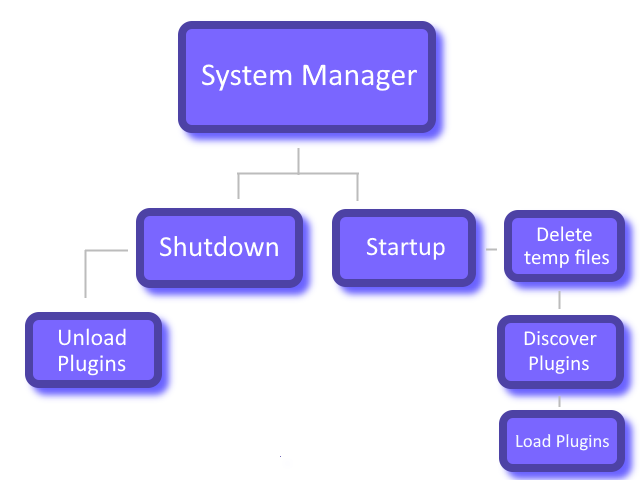

Plugins are discovered and loaded when System Manager starts and remain loaded for the lifetime of the application. All plugins are unloaded when System Manager shuts down.
Before plugins are loaded, System Manager deletes all .tmp files in the plugins directory. These files indicate incomplete downloads from the Plugin Gallery. It also removes the .upgrade extension from .upgrade files, and if a file already exists with that name, it deletes the original before renaming. The reason for this behavior is to allow updating plugins, since plugins cannot be unloaded at runtime.

Figure 1. Plugin lifecycle